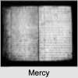

| [Index] |
| Mercy LONG (1673 - 1765) |


|
| b. 1673 |
| m. 17 Jan 1693 John CURLING (1671 - 1721) at St Nicholas, Ash |
| d. 1765 at St Laurence aged 92 |
| Parents: |
| Alexander LONG (1647 - 1731) |
| Elizabeth GILLOW (1654 - ) |
| Events in Mercy LONG (1673 - 1765)'s life | |||||
| Date | Age | Event | Place | Notes | Src |
| 1673 | Mercy LONG was born | Note 1 | |||
| 17 Jan 1693 | 20 | Married John CURLING (aged 22) | St Nicholas, Ash | Note 2 | |
| 1694 | 21 | Birth of daughter Mercy CURLING | St Laurence | Note 3 | |
| 1696 | 23 | Birth of son John CURLING | St Laurence | Note 4 | |
| 1698 | 25 | Birth of daughter Elizabeth CURLING | St Laurence | Note 5 | |
| 1700 | 27 | Birth of son Daniel CURLING | St Laurence | Note 6 | |
| 1702 | 29 | Birth of daughter Ann CURLING | St Laurence | Note 7 | |
| 1705 | 32 | Birth of son Alexander CURLING | St Laurence | Note 8 | |
| 1708 | 35 | Birth of son Thomas CURLING | St Laurence | Note 9 | |
| 1709 | 36 | Birth of daughter Mary CURLING | St Laurence | Note 10 | |
| 1711 | 38 | Birth of daughter Margaret CURLING | St Laurence | Note 11 | |
| 1713 | 40 | Birth of daughter Jane CURLING | St Laurence | Note 12 | |
| 1715 | 42 | Birth of son WIlliam CURLING | St Laurence | Note 13 | |
| 1721 | 48 | Death of husband John CURLING (aged 50) | St Laurence | ||
| 1731 | 58 | Death of father Alexander LONG (aged 84) | |||
| 1738 | 65 | Death of daughter Ann CURLING (aged 36) | Lydden | Note 14 | |
| 1741 | 68 | Death of son Thomas CURLING (aged 33) | |||
| 1743 | 70 | Death of daughter Elizabeth CURLING (aged 45) | St Laurence | Note 15 | |
| 06 Mar 1745 | 72 | Death of son Daniel CURLING (aged 45) | St Laurence | Note 16 | |
| abt 1751 | 78 | Death of son Alexander CURLING (aged 46) | |||
| 16 Dec 1753 | 80 | Death of daughter Margaret CURLING (aged 42) | St Laurence | Note 17 | |
| 1765 | 92 | Mercy LONG died | St Laurence | Note 18 | |
| 1765 | 92 | Death of daughter Mercy CURLING (aged 71) | Ramsgate | Note 19 | |
| Personal Notes: |
|
Surprisingly Cotton does not refer at all to the will of Mercy Curling [(A97 131) of Ramsgate, Thanet widow, dated Nov. 13, 1759 and proved 31 March 1765]. This will provides substantial additional information about the family.
Mercy Curling – Will summary PRC17/97/131a and PRC16/433C/2 made 13 Nov 1739 proved 21 Mar 1765 The Will of Mercy Curling of Ramsgate, Isle of Thanet, widow • Son John and his 4 children 20 shillings each • Deceased son Daniel’s 4 children 20 shillings each • Deceased son Alexander’s 4 (children) 20 shillings apiece • Deceased son Thomas’s 3 children 20 shillings each • Son William and his 7 children 20 shillings each • Mary wife of William Stock, daughter of Mercy’s deceased daughter Elizabeth Harnett, £5 • Thomasind wife of John Maxted, another daughter of Mercy’s deceased daughter Elizabeth Harnett, £5 • Ann Harnett, Dorothy Harnett, Henry Harnett, Peter Harnett and John Harnett the other children of my late daughter Elizabeth Harnett £10 apiece. • Mercy wife of Thomas Hollands £10 • the 4 children of Mercy’s deceased daughter Ann Belsey £20 apiece • Mary Harnett, daughter of Mercy’s daughter Mary, wife of Peter Harnett, a pair of silver salts • Mercy Harnett, daughter of Mercy’s daughter Mary, wife of Peter Harnett, another pair of silver salts • The 3 children of Mercy’s deceased daughter Margaret Read £20 apiece • If any of the Legatees die before Mercy dies, the legacy goes to surviving siblings • Residue to be divided equally between daughters Mercy Osborn and Mary Harnett who are to be the executors of the will. Witnesses Grace Read and John Fagg The two wills substantiate most of Cotton’s conclusions regarding the family of John and Mercy but Mercy’s will shows that her son Thomas did in fact marry and had three children and John’s will makes it clear that his daughter Elizabeth married Henry Harnett and not William Harnett as Cotton thought. Daughter Jane is not included in either will and had probably predeceased her parents. Six of her children had definitely predeased her: Alexander, Thomas, Daniel, Elizabeth, Ann and Margaret. Her daughter Mercy who was to be executor died just before her. |
| Created on a Mac™ using iFamily for Mac™ on 8 Oct 2023 |